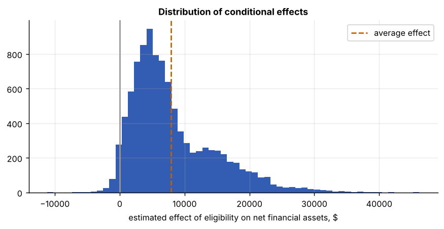
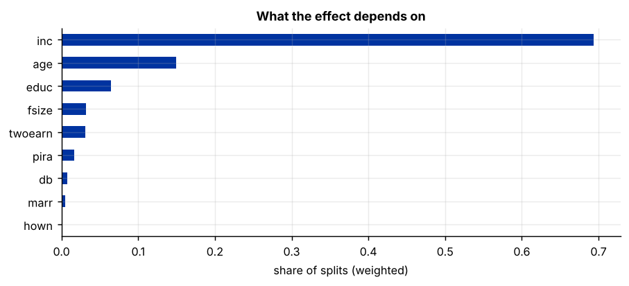
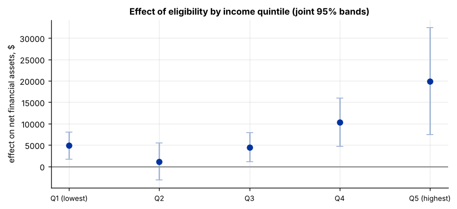
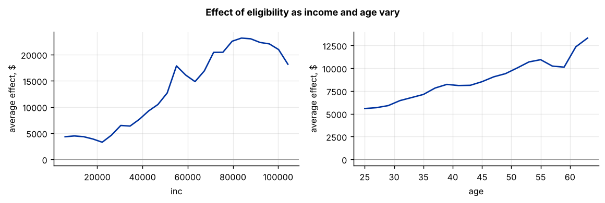

Step 1The question and the model
The DML interactive guide found that 401(k) eligibility raises net financial assets by about 8,000 dollars on average. For policy that is only half the answer. Does eligibility mainly help households that would have saved anyway, high earners with spare income, or does it also build assets for lower-income households? The question is about the conditional average treatment effect (CATE):
A causal forest (Wager and Athey 2018; Athey, Tibshirani and Wager 2019) estimates \(\tau(x)\) with trees that split the sample where the treatment effect differs most, not where the outcome differs. Two features make its confidence intervals valid:
- honesty: each tree uses one half of its sample to choose the splits and the other half to estimate the effect in each leaf;
- orthogonalisation: as in DML, the outcome and the treatment are first residualised on the controls with machine learning, so that confounding by \(X\) does not leak into the heterogeneity estimates.
The implementation used here is CausalForestDML in Microsoft's EconML package.
Heterogeneity needs data and discipline
Effects by subgroup are noisier than the average, so a causal forest needs thousands of observations (the selection tool requires 2,000). And a search for heterogeneity can always find something: decide in advance which dimensions matter for the question (here income, age, education), and report the variation honestly, including when it is small.
Step 2Load the data and recover the average effect
import numpy as np
import pandas as pd
df = pd.read_csv("k401_irm.csv")
y, d = "net_tfa", "e401"
X = [c for c in df.columns if c not in (y, d)]
base = ["age", "inc", "educ", "fsize", "marr", "twoearn", "db", "pira", "hown"] # without the squares: trees need no polynomials
print(f"N = {len(df)} households; {df[d].mean():.1%} eligible; effect modifiers: {', '.join(base)}")N = 9915 households; 37.1% eligible; effect modifiers: age, inc, educ, fsize, marr, twoearn, db, pira, hown
from econml.dml import CausalForestDML
from sklearn.ensemble import RandomForestRegressor, RandomForestClassifier
cf = CausalForestDML(model_y=RandomForestRegressor(n_estimators=300, min_samples_leaf=10, max_features=.5, random_state=0, n_jobs=-1),
model_t=RandomForestClassifier(n_estimators=300, min_samples_leaf=10, max_features=.5, random_state=0, n_jobs=-1),
discrete_treatment=True, cv=5, n_estimators=2000, min_samples_leaf=20, honest=True, random_state=0)
cf.fit(df[y], df[d], X=df[base])
ate, ate_se = cf.ate_[0], cf.ate_stderr_[0] # doubly robust average of the forest's effects
lo, hi = ate - 1.96 * ate_se, ate + 1.96 * ate_se
print(f"average effect from the forest: {ate:,.0f} (s.e. {ate_se:,.0f}; 95% CI {lo:,.0f} to {hi:,.0f})")average effect from the forest: 7,883 (s.e. 1,184; 95% CI 5,562 to 10,204)
The forest's average agrees with the DML estimate from the interactive guide. That is the first check: if the average of the conditional effects did not match the doubly robust ATE, something would be wrong with the forest.
Step 3How much do the effects vary?
import matplotlib.pyplot as plt
tau = cf.effect(df[base])
print(pd.Series(tau).describe(percentiles=[.1, .25, .5, .75, .9]).round(0).to_string())
fig, ax = plt.subplots()
ax.hist(tau, bins=60, color="#0033a0", alpha=.8)
ax.axvline(ate, color="#c46000", ls="--", label="average effect"); ax.axvline(0, color="#999")
ax.set_xlabel("estimated effect of eligibility on net financial assets, $"); ax.set_title("Distribution of conditional effects"); ax.legend()count 9915.0 mean 8072.0 std 6501.0 min -11160.0 10% 1550.0 25% 3539.0 50% 6251.0 75% 11425.0 90% 17529.0 max 46155.0

The estimated effects vary a great deal around the average. Part of that spread is estimation noise: individual CATEs are imprecise. The questions that can be answered reliably are about groups and about which variables drive the variation.
Step 4Which variables drive the heterogeneity?
The forest records how often, and how early, each variable is used to split on the treatment effect.
imp = pd.Series(cf.feature_importances_, index=base).sort_values(ascending=False)
print(imp.round(3).to_string())
fig, ax = plt.subplots(figsize=(8, 3))
imp[::-1].plot.barh(ax=ax, color="#0033a0"); ax.set_xlabel("share of splits (weighted)"); ax.set_title("What the effect depends on")inc 0.694 age 0.150 educ 0.064 fsize 0.032 twoearn 0.031 pira 0.017 db 0.008 marr 0.005 hown 0.001

Step 5Effects by income group
Income is the obvious policy dimension. The group average treatment effect (GATE) for each income quintile needs a valid confidence interval. Averaging the forest's individual intervals does not give one: it treats the spread of individual effects as if it were uncertainty about the average. The clean way is to average the doubly robust (AIPW) scores within each group, which is what DoubleML's gate() does (Semenova and Chernozhukov 2021), with joint confidence bands across the five groups.
import doubleml as dml
q = pd.qcut(df["inc"], 5, labels=["Q1 (lowest)", "Q2", "Q3", "Q4", "Q5 (highest)"])
groups = pd.get_dummies(q).astype(bool)
irm = dml.DoubleMLIRM(dml.DoubleMLData(df, y_col=y, d_cols=d, x_cols=X),
ml_g=RandomForestRegressor(n_estimators=300, min_samples_leaf=10, max_features=.5, random_state=0, n_jobs=-1),
ml_m=RandomForestClassifier(n_estimators=300, min_samples_leaf=10, max_features=.5, random_state=0, n_jobs=-1),
n_folds=5, n_rep=1, trimming_threshold=.01)
np.random.seed(0); irm.fit()
g = irm.gate(groups=groups)
ci = g.confint(level=.95, joint=True, n_rep_boot=2000)
rng = df.groupby(q, observed=True)["inc"].agg(["min", "max"]).apply(lambda r: f"{r['min']:,.0f}–{r['max']:,.0f}", axis=1)
gate = pd.DataFrame({"income range": rng.to_numpy(), "effect": ci["effect"].to_numpy(),
"95% CI low": ci["2.5 %"].to_numpy(), "95% CI high": ci["97.5 %"].to_numpy()}, index=q.cat.categories)
print(gate.round(0))
fig, ax = plt.subplots()
xx = np.arange(5); e = gate["effect"]
ax.errorbar(xx, e, yerr=[e - gate["95% CI low"], gate["95% CI high"] - e], fmt="o", color="#0033a0", ecolor="#9fb3d6", capsize=4)
ax.axhline(0, color="#999"); ax.set_xticks(xx); ax.set_xticklabels(gate.index, fontsize=8)
ax.set_ylabel("effect on net financial assets, $"); ax.set_title("Effect of eligibility by income quintile (joint 95% bands)")income range effect 95% CI low 95% CI high Q1 (lowest) -2,652–17,196 4867.0 1707.0 8028.0 Q2 17,214–26,520 1172.0 -3195.0 5538.0 Q3 26,523–37,275 4494.0 1079.0 7910.0 Q4 37,296–53,841 10284.0 4650.0 15917.0 Q5 (highest) 53,844–242,124 19941.0 7438.0 32444.0

The effect is modest and roughly flat across the bottom three income quintiles and then climbs steeply: the top fifth of earners gain about four times as much as the bottom fifth. The bands are joint, so they can be read together: the top-quintile band lies entirely above the second quintile’s, but the bands of neighbouring quintiles overlap, so the evidence is for a rising pattern, not for sharp differences between adjacent groups.
Step 6How does the effect change with income and age?
Hold every other variable at its observed value and vary one: the forest's predicted effect as a function of income (and, separately, age).
fig, axes = plt.subplots(1, 2, figsize=(9, 3))
for ax, v, grid in ((axes[0], "inc", np.linspace(df.inc.quantile(.02), df.inc.quantile(.98), 25)),
(axes[1], "age", np.arange(25, 65, 2))):
pts = []
for val in grid:
Xg = df[base].copy(); Xg[v] = val
pts.append(cf.effect(Xg).mean())
ax.plot(grid, pts, color="#0033a0"); ax.axhline(0, color="#999", lw=.6)
ax.set_xlabel(v); ax.set_ylabel("average effect, $")
fig.suptitle("Effect of eligibility as income and age vary", fontsize=10, fontweight="bold"); fig.tight_layout()
Step 7Write it up
print(f"ATE (forest): {ate:,.0f}, 95% CI {lo:,.0f} to {hi:,.0f}")
print(gate.round(0).to_string())
print("main drivers:", ", ".join(imp.index[:3]))ATE (forest): 7,883, 95% CI 5,562 to 10,204
income range effect 95% CI low 95% CI high
Q1 (lowest) -2,652–17,196 4867.0 1707.0 8028.0
Q2 17,214–26,520 1172.0 -3195.0 5538.0
Q3 26,523–37,275 4494.0 1079.0 7910.0
Q4 37,296–53,841 10284.0 4650.0 15917.0
Q5 (highest) 53,844–242,124 19941.0 7438.0 32444.0
main drivers: inc, age, educHow to write it: heterogeneity
To study who gains from 401(k) eligibility, we estimate conditional average treatment effects with a causal forest (Wager and Athey 2018), using the orthogonalised, honest implementation of EconML with 2,000 trees and random-forest first stages for the outcome and the propensity score. The forest's average effect matches the doubly robust DML estimate. Income accounts for most of the splits on the treatment effect, followed by age. Group average effects by income quintile, estimated from doubly robust scores with joint confidence bands (Semenova and Chernozhukov 2021), are small in the bottom three quintiles (between about 1,000 and 5,000 dollars) and then rise sharply, to about 10,300 dollars in the fourth quintile and 19,900 dollars in the top quintile (Table X): eligibility mainly raises the financial assets of higher-income households, although the effect is positive and significant even in the lowest quintile. Individual effects are imprecise; we therefore report group averages with confidence intervals and do not interpret individual estimates.
Checklist for the paper
- Start from the average effect (DML) and show that the forest reproduces it.
- Say in advance which dimensions of heterogeneity are of interest.
- Report the forest settings: number of trees, honesty, leaf size, first-stage learners.
- Report group effects with confidence intervals, not individual effects.
- Show which variables drive the heterogeneity and how the effect varies along them.